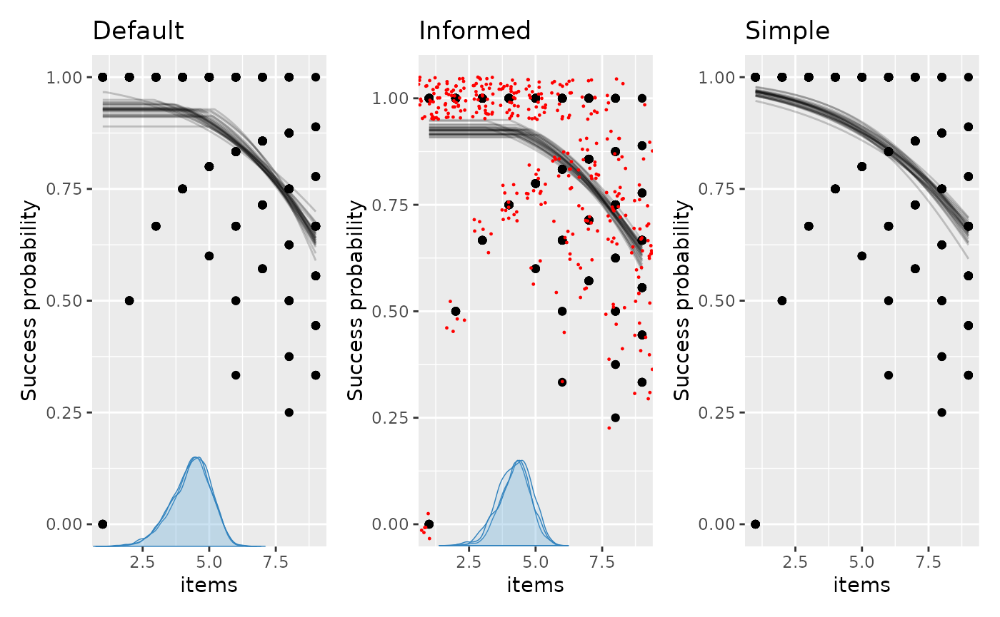

There are three main ways of doing model comparison in
mcp:
- Compare any N
mcpmodels using Leave-One-Out cross-validation (LOO-CV). Check outloo(fit),loo::loo_compare(loo1, loo2, ...), andloo::loo_model_weights(loo1, loo2, ...). - Flexible directional tests using
hypothesis(fit, "cp_1 > 40")orhypothesis(fit, "cp_1 > 40 & x_2 > x_1"). - Point-null Bayes factor tests using the Savage-Dickey density ratio,
e.g.,
hypothesis(fit, "cp_1 = 50")orhypothesis(fit, "x_2 = x_1").
library(mcp)
future::plan(future::multisession, workers = 3)Some models to play with
We know quite a bit about human short-term memory. Namely, the average human has almost perfect recall when presented with 1-4 items (we remember them all), and then errors begin intruding when presented with more items (Cowan, 2001). We also know that memory is not infinite, so as N \rightarrow \infty, it has to plateau.
In other words, on “easy” trials with N <= capacity items to be recalled, we expect a constant high binomial rate. When N > capacity, the rate declines. We specify a prior reflecting our a priori knowledge.
model = list(
recalled | trials(items) ~ 1,
~ 0 + items
)
prior = list(
Intercept_1 = "dnorm(2, 1)", # high recall for easy trials
cp_1 = "dnorm(4, 1)", # performance discontinuity around 4
items_2 = "dnorm(-0.4, 1) T( , -0.2)" # performance deteriorates considerably
)
# A very simple model
model_simple = list(recalled | trials(items) ~ 1 + items)Notice that items is used both as trials
and x-axis. No problem.
Simulate some data using fit$simulate():
# Simulate data
df = data.frame(items = rep(1:9, each = 40), recalled = 1)
# Empty fit (no draws)
empty = mcp(model, data = df, family = binomial(), sample = FALSE)
df$recalled = empty$simulate(
empty, df,
cp_1 = 4,
Intercept_1 = 2.5,
items_2 = -0.4
)
head(df)## items recalled
## 1 1 1
## 2 1 0
## 3 1 1
## 4 1 1
## 5 1 1
## 6 1 1Now fit it with and without the informative prior. We set
iter fairly high because this model is not sampled
efficiently. We will also add sample = "both" to sample
both prior and posterior. We will need both to compute Bayes
factors using hypothesis() later.
fit_default = mcp(model, data = df, family = binomial(), sample = "both", iter = 6000)
fit_info = mcp(model, data = df, prior = prior, family = binomial(), sample = "both", iter = 6000)
fit_simple = mcp(model_simple, data = df, family = binomial(), sample = "both", iter = 6000)We plot them and add a few ggplot2 layers. We jitter the
raw data in the middle plot, just to give a sense of the densities.
library(patchwork)
library(ggplot2)
plot(fit_default) +
ggtitle("Default") +
plot(fit_info) +
ggtitle("Informed") +
geom_jitter(height = 0.05, color = "red", size = 0.2) +
plot(fit_simple) +
ggtitle("Simple")
Bayes Factors using Savage-Dickey density ratios
You can compute Bayes Factors for point-null hypotheses using
hypothesis(). For example, let’s compare a model in which
the change point in recall is fixed at four items with the fitted
continuous model:
equality = hypothesis(fit_default, "cp_1 = 4")
## Warning: Savage-Dickey Bayes factor was computed using default prior(s) for `cp_1`. Point Bayes factors are sensitive to the prior distribution; consider specifying informed priors.
equality
## # A tibble: 1 × 7
## hypothesis mean sd lower upper prob BF
## <chr> <dbl> <dbl> <dbl> <dbl> <dbl> <dbl>
## 1 cp_1 - 4 = 0 0.292 0.748 -1.33 1.54 NA 3.36Notice that mcp issues a warning when computing
Savage-Dickey Bayes factors on default priors. The Savage-Dickey ratio
divides by the prior density at the tested value, so the Bayes factor is
only as meaningful as that prior. The wider the prior, the lower that
density, and the more the Bayes factor favors the point null. If you
obtained these results with a bespoke, substantive prior, you would
interpret them as:
hypothesis: For internal convenience,hypothesisalways re-arranges to test against zero.mean: The posterior mean ofcp_1 - 4, i.e., of the left-hand side after re-arranging.lowerandupper: The interval width defaults to a 95% central posterior interval, but you can change it usinghypothesis(..., width = 0.8).-
BF: The Savage-Dickey density ratio in favor of the point-null model. It is the posterior density divided by the prior density at the tested equality (here \theta = \text{cp}_1 and \theta_0 = 4):BF_{01} = \frac{p(\theta = \theta_0 \mid \text{data})}{p(\theta = \theta_0)}
where \theta is the tested parameter (or contrast), \theta_0 is the hypothesized point value, p(\theta = \theta_0 \mid \text{data}) is the posterior density, and p(\theta = \theta_0) is the prior density. A BF > 1 favors the point-null model, BF = 1 favors neither model, and BF < 1 favors the continuous alternative.
prob: This isNAbecause equality is not an event with positive probability in the continuous model.
Equality tests are limited to named parameters and affine contrasts
such as Intercept_1 - Intercept_2 = 0. Ratios, parameter
products, exponentials, and other nonlinear expressions are
rejected.
To convert a Bayes Factor to a posterior probability for the point-null model, supply your own prior probability for that model. For example:
prior_null_prob = 0.25
posterior_model_prob = equality$BF * prior_null_prob /
(equality$BF * prior_null_prob + 1 - prior_null_prob)
posterior_model_prob## [1] 0.5282336Because point Bayes factors depend directly on the prior density,
they require bespoke, substantively justified priors. For example,
testing cp_1 = 4 on fit_info runs without
warnings because an explicit prior was provided, yielding a
substantially different Bayes factor:
hypothesis(fit_info, "cp_1 = 4")## # A tibble: 1 × 7
## hypothesis mean sd lower upper prob BF
## <chr> <dbl> <dbl> <dbl> <dbl> <dbl> <dbl>
## 1 cp_1 - 4 = 0 0.181 0.627 -1.11 1.29 NA 1.30The default prior on change points is flat across the observed range of x, so it rarely represents an actual prior belief about the change point. Use an informed prior for point-null hypothesis tests.
Directional and combinatoric tests
Maybe we just want to test a few directional hypotheses. For example:
- Does recall begin to deteriorate when
cp_1 > 3? - Is the change point in the interval
cp_1 > 3.5 & cp_1 < 4.5? - The only constraint is your imagination. How about all hypotheses we
may have at once?
cp_1 > 3.5 & cp_1 < 4.5 & items_2 < -0.4 & Intercept_1 > 2.5, and a contrasting hypothesis(cp_1 < 3.5 | cp_1 > 4.5) & items_2 > -0.4 & Intercept_1 < 2.5. Each hypothesis is tested against its complement, i.e., all draws where it is false.
hypothesis(fit_info, c(
"cp_1 > 3",
"cp_1 > 3.5 & cp_1 < 4.5",
"cp_1 > 3.5 & cp_1 < 4.5 & items_2 < -0.4 & Intercept_1 > 2.5",
"(cp_1 < 3.5 | cp_1 > 4.5) & items_2 > -0.4 & Intercept_1 < 2.5"
))## # A tibble: 4 × 7
## hypothesis mean sd lower upper prob BF
## <chr> <dbl> <dbl> <dbl> <dbl> <dbl> <dbl>
## 1 cp_1 - 3 > 0 1.18 0.627 -0.107 2.29 0.962 4.69
## 2 cp_1 > 3.5 & cp_1 < 4.5 NA NA NA NA 0.533 1.81
## 3 cp_1 > 3.5 & cp_1 < 4.5 & items_2 < -0.4 & Intercept_1 > 2.5 NA NA NA NA 0.298 3.67
## 4 (cp_1 < 3.5 | cp_1 > 4.5) & items_2 > -0.4 & Intercept_1 < 2.5 NA NA NA NA 0.036 0.615Comparing the Bayes factors shows which hypothesis received the larger update from prior to posterior.
There are more examples in the
documentation for hypothesis, including how to test
group-level deviations and relative
changes between segments.
mcp evaluates the directional hypothesis for both
posterior and prior draws. The returned prob is the
posterior probability by default, or the prior probability with
prior = TRUE; the Bayes factor is the posterior odds
divided by the prior odds:
BF_{10} = \frac{P(H \mid \text{data}) \,/\, [1 - P(H \mid \text{data})]}{P(H) \,/\, [1 - P(H)]}
where H is the stated directional hypothesis, P(H \mid \text{data}) is its posterior probability, and P(H) is its prior probability.
hypothesis(fit_info, "cp_1 > 3.5 & cp_1 < 4.5")## # A tibble: 1 × 7
## hypothesis mean sd lower upper prob BF
## <chr> <dbl> <dbl> <dbl> <dbl> <dbl> <dbl>
## 1 cp_1 > 3.5 & cp_1 < 4.5 NA NA NA NA 0.533 1.81
# ... is identical to
prob = function(fit, prior = FALSE) {
draws = as_draws_df(fit, prior = prior)
mean(draws$cp_1 > 3.5 & draws$cp_1 < 4.5)
}
post_prob = prob(fit_info, prior = FALSE)
prior_prob = prob(fit_info, prior = TRUE)
BF = (post_prob / (1 - post_prob)) / (prior_prob / (1 - prior_prob))
print(c(post_prob = post_prob, BF = BF))## post_prob BF
## 0.5325556 1.8147922Cross Validation
We can use the cross-validation from the loo package to
compare the predictive performance of mcp models. Use
loo() to compute the expected log pointwise predictive
density (ELPD) or waic() for the Widely Applicable
Information Criterion (WAIC) for each model, and then compare them using
loo::loo_compare().
The strength of LOO-CV is that you can compare any N models, as long
as they are models of the same data. In general, LOO-CV is the only
inferential method for non-nested models in mcp. For
example:
- The existence of one or several change points. The article on Poisson change points contains an example of comparing a change-point model to a model without change points.
- Models that differ by several parameters.
- Comparing different priors.
What is LOO-CV?
You can read more about Leave-One-Out Cross Validation elsewhere, but briefly, it does this:
- Computes the posteriors using all data less one data point (hence “leave one out”).
- Computes the posterior predictive density at the left-out data point (out-of-sample data). For example, if the posterior predictive distribution is normal, a data point near its mean has higher density (it is less “surprising”) than if it is at z = -3. Better predictions mean higher densities, i.e., less surprisal.
- Repeats steps 1-2 for all observed data and multiplies these densities to get the combined predictive density at unobserved data. Multiplying is the same as summing in log-space, and the latter has the advantage of being computationally much more feasible. Hence the name “expected log pointwise predictive density” (ELPD). The higher the ELPD, the better.
Refitting the model once per data point would be slow.
loo() approximates it from a single fit using
Pareto-smoothed importance sampling (PSIS-LOO). The Pareto k diagnostics flag data points where this
approximation is unreliable.
As with Bayes factors, LOO-CV can prefer simpler models. A parameter that mostly fits noise in the observed data makes predictions for left-out data worse. If it does too little to improve those predictions, it is a net negative for predictive accuracy, and the simpler model will be preferred.
Also, if the data is reasonably informative (it almost always is), LOO-CV is much less influenced by priors than Bayes factors. For LOO, the priors can more be thought of as regularization (shrinking estimates towards plausible values) than as the point of departure which all our inferences are relative to (Bayes Factors).
Applied example
We can look at the loo for one model:
loo_info = loo(fit_info)
loo_info##
## Computed from 18000 by 360 log-likelihood matrix.
##
## Estimate SE
## elpd_loo -365.7 16.5
## p_loo 2.8 0.3
## looic 731.4 33.1
## ------
## MCSE of elpd_loo is 0.1.
## MCSE and ESS estimates assume MCMC draws (r_eff in [0.0, 0.9]).
##
## All Pareto k estimates are good (k < 0.7).
## See help('pareto-k-diagnostic') for details.This is not terribly informative in and of itself. looic = -2 * elpd_{loo} as are the corresponding SEs, so that is just a matter of scale. What ELPD tells you is that the product of the densities of all left-out data points is approximately exp(-366) \sim 10 ^ {-159}, a vanishingly small number because we multiply many small numbers. This is mentally hard to interpret because the density at a given point is only meaningful relative to the full distribution. Furthermore, it depends on the size of the dataset (the more small densities you multiply, the smaller the ELPD).
What is interesting is the relative differences in these
predicted densities. We can compare the models using
loo::loo_compare(). Save the results as separate objects if
you want to reuse them or save them for later.
loo_default = loo(fit_default)
loo_simple = loo(fit_simple)
loo::loo_compare(loo_default, loo_info, loo_simple)
## model elpd_diff se_diff p_worse diag_diff diag_elpd
## model2 0.0 0.0 NA
## model1 -0.3 0.2 0.90 |elpd_diff| < 4
## model3 -4.1 2.8 0.93
##
## Diagnostic flags present.
## See ?`loo-glossary` (sections `diag_diff` and `diag_elpd`)
## or https://mc-stan.org/loo/reference/loo-glossary.html.The top row is the preferred model, here the second model passed to
loo_compare() (“model2”, i.e., fit_info). Read
each elpd_diff relative to its se_diff:
fit_default is practically indistinguishable from
fit_info, and the simple model is only somewhat worse. So
the informed prior adds little predictive accuracy, and the evidence for
a change point over a straight line is modest.
In recent versions of loo, loo_compare()
reports p_worse (the estimated probability that a model is
worse than the best model) alongside diagnostic flags
(diag_diff and diag_elpd) based on Sivula et al. (2025).
These diagnostics highlight when the normal approximation underlying
se_diff and p_worse is unreliable. For
example, |elpd_diff| < 4 flags that models have very
similar predictive performance and should be treated as practically
indistinguishable (as between model2 and
model1 here), while N < 100 warns of
small-sample uncertainty underestimation. See the LOO
glossary or ?loo::loo-glossary for details on all
diagnostic flags.
You could do the same using waic(). WAIC is
asymptotically equivalent to LOO-CV but less robust to influential data
points, so loo() is generally preferred. The results are
often practically identical.
waic_default = waic(fit_default)
waic_info = waic(fit_info)
waic_simple = waic(fit_simple)
loo::loo_compare(waic_default, waic_info, waic_simple)
## model elpd_diff se_diff p_worse diag_diff diag_elpd
## model2 0.0 0.0 NA
## model1 -0.3 0.2 0.90 |elpd_diff| < 4
## model3 -4.1 2.8 0.93
##
## Diagnostic flags present.
## See ?`loo-glossary` (sections `diag_diff` and `diag_elpd`)
## or https://mc-stan.org/loo/reference/loo-glossary.html.Stacking
The loo package contains many other useful functions.
For example, if prediction is your goal, it is often optimal to
combine models rather than letting the “winner-takes-it-all” do
all the predicting. This is also called stacking:
loo::loo_model_weights(list(
default = loo_default,
info = loo_info,
simple = loo_simple
))## Method: stacking
## ------
## weight
## default 0.111
## info 0.889
## simple 0.000This means that once info (fit_info) has
done its “predicting”, the others add very little over and above that.
If you want to learn about how well they predict relative to each other,
use loo::pseudobma_weights(), which weights each model
proportional to \exp(\text{ELPD}).